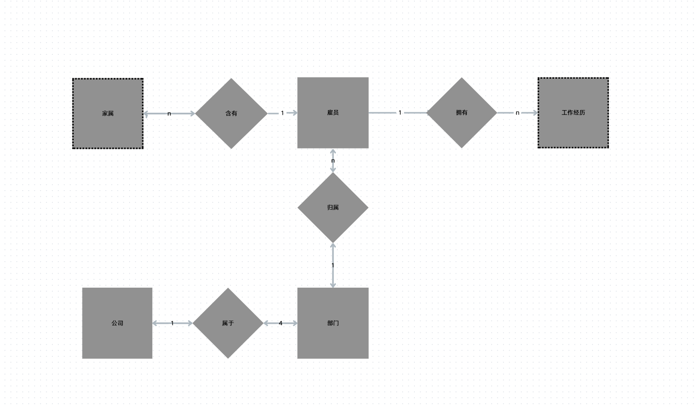
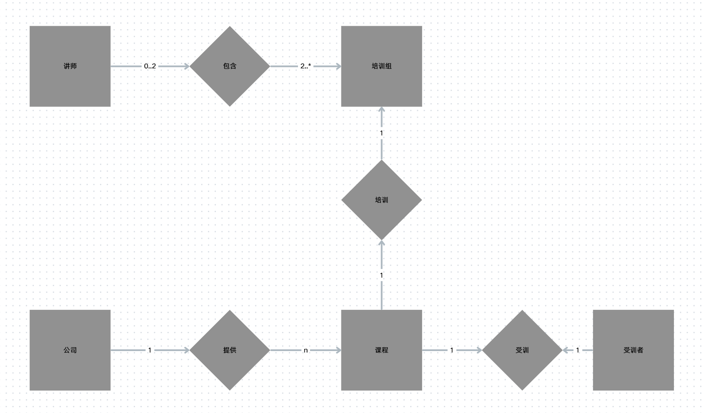
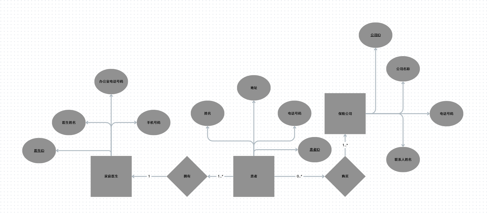
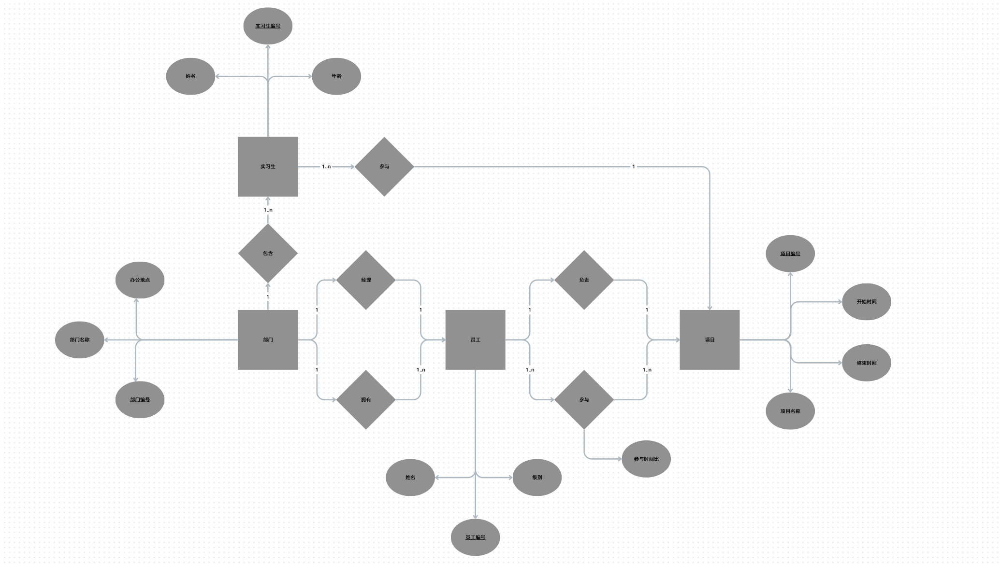
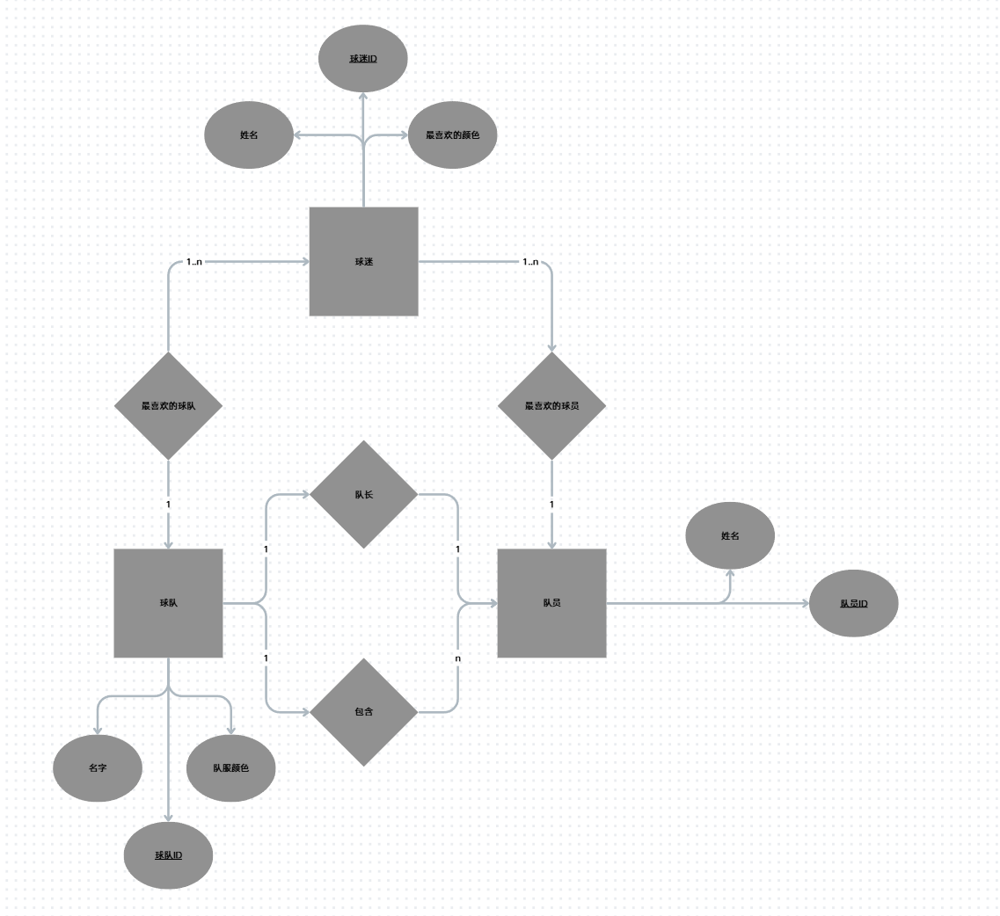

第十周作业¶
概念简答¶
简述数据库设计的基本步骤
分为
-
需求分析 自顶向下
-
概念结构的设计 自底向上
- 逻辑结构的设计 E-R图 -> 一般数据模型 -> 特定DBMS数据模型 -> 优化数据模型 -> 设计用户子模式
- 物理结构的设计 确定物理结构并进行评价
- 数据库实施
- 数据库运行与维护
简述需求分析阶段的任务和方法
-
任务
自顶向下地进行分析，充分了解原系统工作概况，明确系统的各种需求（信息要求、处理要求、安全性与完整性要求），然后在此基础上确定新系统的功能
-
方法/步骤
- 调查组织机构
- 调查各部门的业务活动情况
- 明确用户需求
- 计算机应用现状
- 确定新系统的边界
什么是数据库的逻辑结构设计?简述其设计步骤
-
概念 把概念结构阶段设计好的基本E-R图转换为与选用DBMS产品所支持的数据模型相符合的逻辑结构
-
设计步骤 E-R图 -> 一般数据模型 -> 特定DBMS数据模型 -> 优化数据模型 -> 设计用户子模式
规范化对数据库设计有什么指导意义?
- 提供理论基础
- 减少冗余与异常
- 提供模式分解步骤及其标准
- 确保设计的等价性
简述将E-R图转换为关系模型的一般规则
- 基础结构的对应
- 实体转换为表
- 简单属性转换为表的列
- 复合属性转换为组成该复合属性的简单属性集
- 多值属性转换为表和外键
- 关键字属性转换为主键
- 1:1 或 1:N 联系通常通过外键隐含地表示
- M:N 联系转换为联系表和两个外键
- n元联系转换为联系表和n个外键
- 遵循9步算法
- Step 1：强实体的转换
- Step 2：仅参与一个1:1联系的弱实体的转换
- Step 3：参与1:N或M:N联系的弱实体的转换
- Step 4：1:1 联系的转换
- Step 5：1:N 联系的转换
- Step 6：N元联系（包括M:N联系）
- Step 7：多值属性的转换
- Step 8：具有强制参与且不相交的超类/子类联系的转换
- Step 9：具有相交子类或可选参与且不相交的超类/子类联系的转换
综合应用¶
为下面的描述建立ER图:
- 一个公司有四个部门，每个部门属于一个公司。
- 每个部门有一或多名雇员，每名雇员在一个部门工作。
- 每名雇员可能有一名或多名家属，每个家属属于一名雇员。
- 每名雇员可能有工作经历
注意以下 家属和工作经历是弱实体 用虚线矩形画即可

将ER图转换为关系模式，并指明所有候选键、主键和外键
公司 (Company)
- 关系模式：公司 ( 公司编号, 公司名称... )
部门 (Department)
- 关系模式：部门 ( 部门编号, 部门名称..., *公司编号* )
- 外键：
公司编号引用自「公司」表。
雇员 (Employee)
- 关系模式：雇员 ( 雇员编号, 姓名..., *部门编号* )
- 外键：
部门编号引用自「部门」表。
家属 (Dependent) —— 弱实体转换
- 关系模式：家属 ( *雇员编号*, 家属编号/姓名, 与雇员关系... )
- 主键：
(雇员编号, 家属编号/姓名)构成的复合主键。 - 外键：
雇员编号引用自「雇员」表。
工作经历 (Work_Experience) —— 弱实体转换
- 关系模式：工作经历 ( *雇员编号*, 经历序号, 开始时间, 结束时间, 公司名... )
- 主键：
(雇员编号, 经历序号)构成的复合主键。 - 外键：
雇员编号引用自「雇员」表。
现在需要为一家从事IT培训的公司建立一个概念数据模型，来满足该公司的数据需求。 公司有30名讲师，每期培训课程可以有100名受训者。该公司提供五门高级技术课程，每门课程由一个培训组进行培训，该培训组有两名或更多讲师。每名讲师最多只能同时分派到两个培训组中或分派从事研究工作。每名受训者在每期培训中都要学习一门高级技术课程。 请完成下列任务: (1)确定该公司的主要实体类型 (2)确定主要联系类型和每个联系的多样性，声明对数据所做的假设。 (3)使用(1)和(2)中得到的结果，画出表示该公司数据需求的ER图。
-
主要实体
- 公司
- 培训课程/技术课程
- 培训组
- 讲师
- 受训者
均为强实体
-
数据联系
- 公司提供课程
- 课程和培训组一一对应
- 培训组分配讲师
- 受训者参与课程
-
都在一期培训中 建立如下E-R图 关键在于讲师和培训组的数量对应
- 一个讲师可以对应0 1 2个培训组
- 一个培训组可以有 2 ~ * 讲师

将ER图转换为关系模式，并指明所有候选键、主键和外键
课程 (Course)
- 关系模式：课程 ( 课程编号, 课程名称, )
培训组 (Training_Group)
- 关系模式：培训组 ( 培训组编号, *课程编号* )
- 外键：
课程编号引用自「课程」表（处理课程与培训组的 1:1 或 1:N 联系）。
受训者 (Trainee)
- 关系模式：受训者 ( 受训者编号, 姓名, *学习课程编号* )
- 外键：
学习课程编号引用自「课程」表（每名受训者学习一门课程 N:1）。
讲师 (Instructor)
- 关系模式：讲师 ( 讲师编号, 姓名 )
培训分配 (Group_Instructor_Allocation) —— 处理讲师与培训组的 M:N 联系
- 关系模式：培训分配 ( *讲师编号*, *培训组编号* )
- 主键：
(讲师编号, 培训组编号)构成的复合主键。 - 外键：
讲师编号引用自「讲师」表，培训组编号引用自「培训组」表。
U.R.Sick是一家综合医院的管理员。他希望为医院的门诊诊所建立一个数据库，患者可以在门诊诊所接受紧急治疗。当患者第一次到达时，我们需要记录一些基本信息，例如姓名，地址和电话号码。此外，我们需要了解该患者有哪些保险公司的服务。来这家诊所的患者通常会有一家以上的保险公司的服务。为了协助计费，我们需要保留我们的患者使用的保险公司列表，以便我们拥有每家保险公司的公司名称，电话号码和联系人姓名。由于诊所只是紧急治疗，我们需要跟踪患者的家庭医生，以便我们向他们发送信息。每位患者都有一位家庭医生。为了协助联系家庭医生，我们需要维护一份医生名单，其中包括医生的姓名，手机号码和办公室电话号码。 请为上面的描述建立ER图
先梳理实体
-
患者
-
保险公司
-
家庭医生
然后是实体之间的关联
- 患者购买保险公司服务 1 患者 - 1 ..*保险公司
- 患者带有家庭医生 1..* 患者 - 1 家庭医生
最后是实体的属性
- 患者拥有 姓名 地址 电话号码
- 保险公司拥有 公司名称 电话号码 联系人姓名
- 家庭医生拥有 医生姓名 手机号码 办公室电话号码
整理E-R图

将ER图转换为关系模式，并指明所有候选键、主键和外键
家庭医生 (Family_Doctor)
- 关系模式：家庭医生 ( 医生编号, 医生姓名, 手机号码, 办公室电话号码 )
患者 (Patient)
- 关系模式：患者 ( 患者编号, 姓名, 地址, 电话号码, *家庭医生编号* )
- 外键：
家庭医生编号引用自「家庭医生」表（处理每位患者都有一位家庭医生 1:N）。
保险公司 (Insurance_Company)
- 关系模式：保险公司 ( 公司编号, 公司名称, 电话号码, 联系人姓名 )
患者保险 (Patient_Insurance) —— 处理 M:N 联系
- 关系模式：患者保险 ( *患者编号*, *公司编号* )
- 主键：复合主键
(患者编号, 公司编号)。 - 外键：
患者编号引用「患者」表，公司编号引用「保险公司」表
考虑某个 IT 公司的数据库信息: (1) 部门具有部门编号、部门名称、办公地点等属性; (2) 部门员工具有员工编号、姓名、级别等属性，员工只在一个部门工作; (3) 每个部门有唯一一个部门员工作为部门经理; (4) 实习生具有实习编号、姓名、年龄等属性，只在一个部门实习; (5) 项目具有项目编号、项目名称、开始日期、结束日期等属性; (6) 每个项目由一名员工负责，由多名员工、实习生参与; (7) 一名员工只负责一个项目，可以参与多个项目，在每个项目具有工作时间比; (8) 每个实习生只参与一个项目。 画出 E-R 图，并将 E-R 图转换为关系模型(包括关系名、属性名、码和完整性约 束条件)
先梳理实体
- 部门
- 部门员工
- 实习生
- 项目
部门经历和项目负责人完全可以用一个关系来表述
然后是实体关系
- 部门有多个员工
-
部门有唯一员工经理
-
部门有多个实习生
- 项目有唯一负责员工
- 项目由多名员工 实习生参与
- 员工可以参与多个项目
- 实习生只参与一个项目
员工参与项目 具备关系属性 参与时间比
实体属性
-
部门具有部门编号、部门名称、办公地点等属性
-
部门员工具有员工编号、姓名、级别等属性
-
实习生具有实习编号、姓名、年龄等属性
-
项目具有项目编号、项目名称、开始日期、结束日期等属性

部门 (Department)
- 关系模式：部门 ( 部门编号, 部门名称, 办公地点, *经理编号* )
- 外键：
经理编号引用自「员工」表的员工编号（处理 1:1 的<管理>联系）。
员工 (Employee)
- 关系模式：员工 ( 员工编号, 姓名, 级别, *部门编号* )
- 外键：
部门编号引用自「部门」表（处理 1:N 的<工作于>联系）。
实习生 (Intern)
- 关系模式：实习生 ( 实习编号, 姓名, 年龄, 部门编号**, 参与项目编号** )
- 外键1：
部门编号引用自「部门」表。 - 外键2：
参与项目编号引用自「项目」表的项目编号（处理实习生只参与一个项目 N:1）。
项目 (Project)
- 关系模式：项目 ( 项目编号, 项目名称, 开始日期, 结束日期, *负责人编号* )
- 外键：
负责人编号引用自「员工」表的员工编号（处理 1:1 的<负责>联系）。
员工项目参与 (Project_Participation) —— 处理 M:N 联系及联系上的属性
- 关系模式：员工项目参与 ( *员工编号*, *项目编号*, 参与时间比 )
- 主键：复合主键
(员工编号, 项目编号)。 - 外键：
员工编号引用「员工」表，项目编号引用「项目」表
有一个记录球队、队员和球迷信息的数据库，包括: (1) 对于每个球队，有球队的名字、队员、队长(队员之一)及队服的颜色。 (2) 对于每个队员，有其姓名和所属球队。 (3) 对于每个球迷，有其姓名、最喜爱的球队、最喜爱的队员及最喜爱的颜色。 用 E-R 图画出该数据库的信息模型，并将 E-R 模型转换成关系模型。
实体
- 球队
- 队员
- 球迷
实体关系
- 球队含有队员
- 球队含有球迷
- 球队含有队长
实体属性
-
每个球队，有球队的名字、队员、队长(队员之一)及队服的颜色
-
每个队员，有其姓名和所属球队
-
每个球迷，有其姓名、最喜爱的球队、最喜爱的队员及最喜爱的颜色

球队 (Team)
- 关系模式：球队 ( 球队ID, 名字, 队服颜色, *队长ID* )
- 外键：
队长ID引用自「队员」表的队员ID（处理队长 1:1 联系）。
队员 (Player)
- 关系模式：队员 ( 队员ID, 姓名, *所属球队ID* )
- 外键：
所属球队ID引用自「球队」表的球队ID（处理球队包含队员 1:N 联系）。
球迷 (Fan)
- 关系模式：球迷 ( 球迷ID, 姓名, 最喜爱的颜色, 最喜爱球队ID**, 最喜爱队员ID** )
- 外键1：
最喜爱球队ID引用自「球队」表（处理球迷喜爱球队 N:1 联系）。 - 外键2：
最喜爱队员ID引用自「队员」表（处理球迷喜爱队员 N:1 联系）